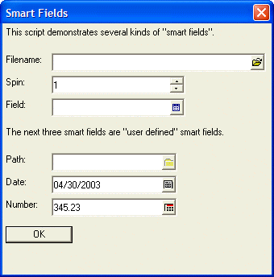
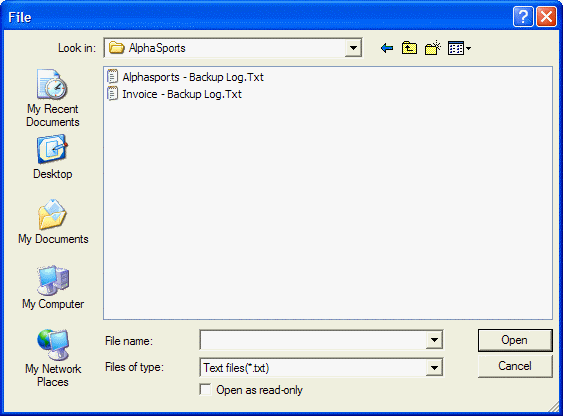
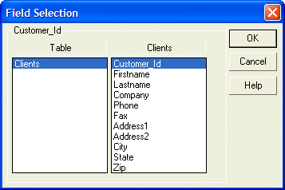
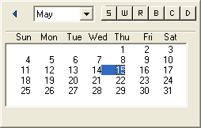
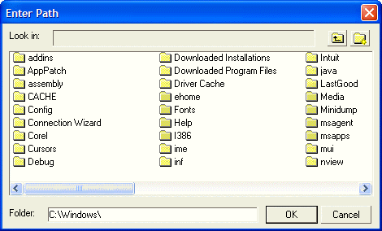
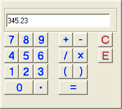

Smart Fields in Xdialogs
The following script creates a dialog with several smart fields:
Tbl = table.current() Original_Filename = tbl.filename_get() Tbl = table.reset("clients") spin = 1 date1 = date() number = 345.23 result=ui_dlg_box("Smart Fields",<<%dlg% {ysize=2} {region} This script demonstrates several kinds of "smart fields".; {endregion}; {region} Filename:| [%fText files(*.txt)|Doc files(*.doc)%.52filename]; Spin:| [%s1,10%.32spin]; Field:| [%d%.32field]; {endregion}; |
The next three smart fields are "user defined" smart fields:
{region} The next three smart fields are "user defined" smart fields.; {endregion}; {region} Path:| [%p=ui_get_path("Enter Path","c: ","c:\windows\ ");I=$a5_folder%.30path]; Date:| [%P=popup.calendar( dtoc(date1) );I=popup.calendar%.30date1]; Number: | [%P=popup.calculator(number);I=popup.calculator%.30number]; {endregion}; <*15&OK>; %dlg% ) table.reset(original_filename) |
This script creates this dialog:

Lesson 5: Smart Fields
When the user clicks the 'Open File' icon on the 'Filename' field, the following dialog is displayed:

This is the standard File Open dialog for your operating system. In the case of the above dialog, this is the dialog displayed by Windows 2000. The dialog will look different for Windows 98 or XP.
The formatting code used in the above script for the File Select smart field is:
[%fText files(*.txt)|Doc files(*.doc)%.52filename] |
Immediately following the 'f' formatting option, the text Text files(*.txt) designates the text that appears in the 'Files of type:' field on the dialog. The dialog will display files that match the mask *.txt with the description 'Text files' next to it. The 'Files of type:' field on the dialog is a drop-down combo box. If you open this dialog, you will see other file filters. These filters are specified in the format string using the '|' separator. In the above case, a second file filter has been supplied. This is Doc files(*.doc). If you select this entry in the 'Files of type:' combo box, then the dialog will display all of the .doc files in the folder.
You can set the default path for the dialog when it opens by initializing the text box variable.
In the above case, if you wanted to display the 'c:\windows' folder when the dialog was opened, you would initialize the 'filename' variable before the dialog was displayed. For example:
Filename = "c:\windows"+chr(92) |
 Note : chr(92) is the '\' character. You cannot set filename to "c:\windows\" because '\"' has special meaning. The '\' character is used to escape the quote when you want to include a quoted string within another quoted string.
Note : chr(92) is the '\' character. You cannot set filename to "c:\windows\" because '\"' has special meaning. The '\' character is used to escape the quote when you want to include a quoted string within another quoted string.
When the user closes the file select dialog, the filename that was selected is stored in the 'filename' variable (in the case of the above example), and is displayed in the text box.
When you click on the up or down arrows of the spin control smart field the value in the control is increased or decreased by 1, until you reach the upper or lower limit specified in the spin control's definition. The formatting code to specify the spin control smart field is:
Spin:| [%s1,10%.32spin] |
The text '1,10' immediately following the 's' formatting code specifies the lower and upper limit of the spin control.
When the user clicks the 'Fields' icon on the Table Fields smart field, the following dialog is displayed:

Alpha Five displays the fields from the primary table or set in the session.
In the above example, we used the command:
Tbl = table.reset("clients") |
to change the primary table of the session to 'clients'.
When the user closes the dialog, the field selected is stored in the 'field' variable (in the case of the above example), and is displayed in the text box. Alpha Five returns the field name in the form table_name->field_name.
The syntax for specifying a filter expression smart field requires the names of one or more tables.
ui_dlg_box("Define Filter Expression",<<%dlg% Filter Expression [%P=a5_get_filter(".t.","customer.dbf", .t.)%.50filter]; %dlg%) |
The syntax for specifying an order expression smart field requires the names of one or more tables.
ui_dlg_box("Define Order Expression",<<%dlg% Order Expression [%P=a5_get_order("","customer.dbf", .t.)%.50order]; %dlg%) |
Alpha Five allows you to define your own smart fields. You can specify what function to call when the user clicks the smart field icon, and you can specify the bitmap to use for the smart field icon.
The syntax for specifying a user defined smart field is:
[%p=function%.SizeVarname] (uses the default icon) [%p=function;I=bitmap%.SizeVarname] (uses custom icon) |
where function is the name of the function to call, size is the size of the text box control, varname is the name of the variable that the smart field will set, and bitmap is the name of the bitmap to display.
 Note : Advanced users should note that you can also specify the name of an event, rather than a function name for the user defined smart field. Event handling is covered later in this tutorial.
Note : Advanced users should note that you can also specify the name of an event, rather than a function name for the user defined smart field. Event handling is covered later in this tutorial.
Date Smart Field
When the user clicks the icon on the 'Date' smart field, this dialog is displayed:

The 'Date' smart field is defined as follows:
[%P=popup.calendar( dtoc(date1) );I=popup.calendar%.30date1] |
POPUP.CALENDAR()is a built-in Alpha Five function that displays a pop-up calendar. It takes an optional character parameter which is the default date to display when the calendar is opened. The command dtoc(date1) converts the value in date1 (a date value) to a character value.
Path Smart Field
When the user clicks the icon on the 'Path' field, this dialog is displayed:

The 'Path' user defined smart field is defined as follows:
[%p=ui_get_path("Enter Path","c: ", "c:\windows\ ");I=$a5_folder%.30path] |
UI_GET_PATH()is a built-in Alpha Five function. $a5_folder is a built-in Alpha Five bitmap.
 Note : To see a list of all built-in Alpha Five bitmaps, use the A5.BITMAP_ENUM(flag) method. Flag = "" returns the bitmaps defined in the current database, flag = 512 returns the bitmaps used by Alpha Five's toolbars and menus, flag = 1024 returns the system bitmaps. Another way to see all of the built-in images is to use the Code, Insert Image Name command while editing a script in the Code Editor.
Note : To see a list of all built-in Alpha Five bitmaps, use the A5.BITMAP_ENUM(flag) method. Flag = "" returns the bitmaps defined in the current database, flag = 512 returns the bitmaps used by Alpha Five's toolbars and menus, flag = 1024 returns the system bitmaps. Another way to see all of the built-in images is to use the Code, Insert Image Name command while editing a script in the Code Editor.
Number Smart Field
When the user clicks the icon on the 'Number' field, this dialog is displayed:

The 'Number' user defined smart field is defined as follows:
Popup.calculator(default_number) is a built-in Alpha Five function. It displays a calculator with default_number as the default entry in the calculator. The command popup.calculator(number) opens the calculator and shows the existing value in the text box in the calculator.
 Note : The Alpha Five popup calculator is not your average calculator! You can type any expression that you want into the text box on the calculator, using any of Alpha Five's hundreds of functions. You can also use parentheses for complex calculations, such as (sqrt(234)+123+45)/(15*6).
Note : The Alpha Five popup calculator is not your average calculator! You can type any expression that you want into the text box on the calculator, using any of Alpha Five's hundreds of functions. You can also use parentheses for complex calculations, such as (sqrt(234)+123+45)/(15*6).
Next
Supported By
Alpha Five Version 5 and Above
Limitations
Desktop applications only